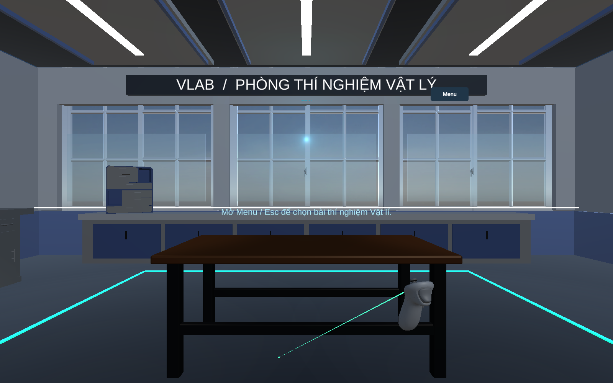
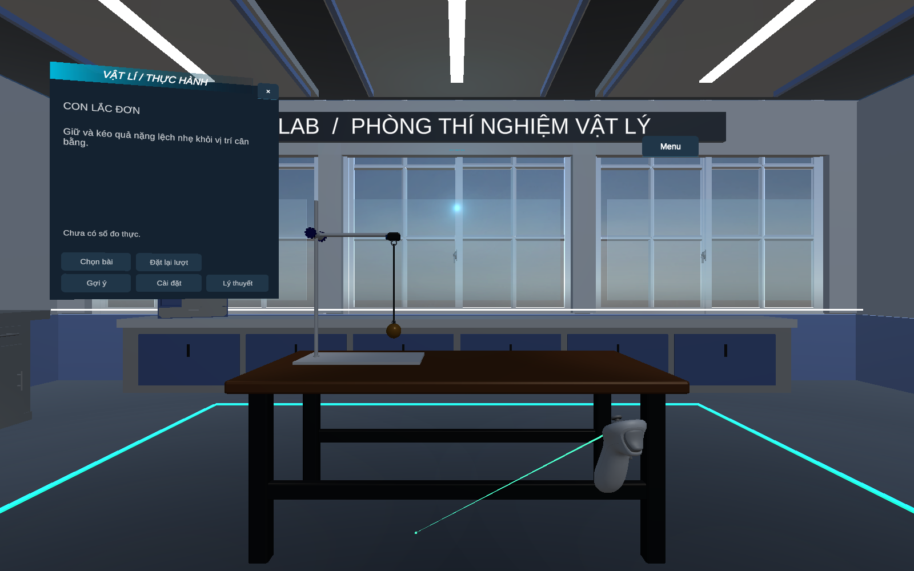

Use the selector and slider to compare the fresh baseline with the repaired project. Captures document Editor behavior; Android hardware performance and physical controller tracking are separate checks. See the accompanying report for test and build status.

